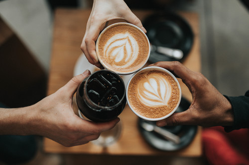

Recetas
Sobre nosotros
¡Bienvenidos a este maravilloso mundo de la cafetería! Somos Nico, Leandro, Carlos, Rocio y Martin! Creadores del proyecto "La casa de café". A través de este espacio queremos compartir con ustedes algunas recetas fáciles y riquísimas que te acompañarán en distintos ámbitos de tu vida cotidiana. Solo necesitarás ganas de probar algo rico y diferente!
La casa de café
La casa de café es un blog dedicado a difundir la cultura del buen café. Esta orientado a personas que desconocen este mundo y que desean, de forma profesional o amateur aprender mas sobre este producto. El Café es mucho mas que una semilla o una bebida, es una sucesión de recuerdos emocionales y sensoriales asociados a momentos especiales de nuestra vida. Por eso y porque es el sustento de muchas personas y el sueño de muchas otras. De ahí que queramos dedicarle un espacio en la red y trasmitir todo lo que el café simboliza para nosotros.

Rocío

Martin

Leandro

Nico

Carlos